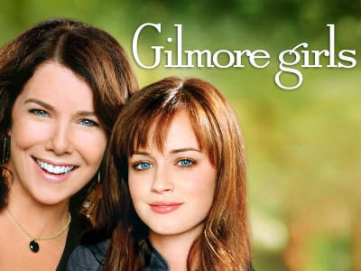

Studying Japanese Language The Japanese to English Grammar Parser
JavaScript Game This is a Dungeons & Dragons single encounter game that I created in JavaScript.
I'm attempting to read "The Women" by Kristin Hannah again. This time, I am in a good place to read about heroic women who did tours of duty in Vietnam.

I'm on season 1 of The Gilmore Girls. They are talking about how someone might want to get an actual mobile phone rather than a pager. The year was 2000.
I'm sure my sister identified with this story. She was a straight A student and her only daughter is smart too. Ironically, my parents didn't become really wealthy until after she went off to college.
I'm still watching "Welcome Back, Kotter" 3.20
Links
Pinterest is a digital picture tomb of all the things I loved in life. The Meme Math Textbook is here. Biblical Secrets are here.
The Archive contains scans of books from when we killed trees.